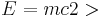
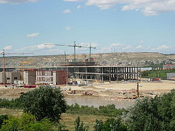
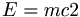
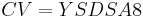

Miami
 De: La Frikipedia, la enciclopedia extremadamente seria.
De: La Frikipedia, la enciclopedia extremadamente seria.
«¿Que quien es maria? Pues la que da alegria»
~ Yonki Idolatrando las costumbres miameñas.
| De la serie ciudades del mundo:
|
| Miami
|
|
|

|
| (Bandera)
|
(Escudo de armas)
|
|
| Topónimo oficial
|
Floristerias
|
| País
|
Estados juntitos de América
|
| Código postal
|
pendiente de asignar
|
| Superficie
|
a veces
|
| Altitud
|
2 montañas y una palmera a ojo...
|
| Distancia
|
Bastante...
|
| Fundación
|
0 antes de dios espagueti volador
|
| Población
|
indignada
|
| Gentilicio
|
Miameños, floridos
|
| Alcalde
|
Florentino crisantenez[1]
|
| Tiene forma de cola con artritis
|
Miami es una peneinsula del sur de los Florida (de hay el topónimo de floristerias) este estado esta al sur apuntando a Cuba, mal rollo.
Miami, en realidad, no esta habitada todo por miameños, es mas, la leyenda dice que un 97% de los que viven en Miami son comunistas, un 1% son floridos (miameño) y un 1% son... estoooo, camellos...
Geografia
Miami esta formá por:
- Miami epicentro: es la sede mundial de la AHAFY (Asciacion Humana A Favor de los Yonkis) esta asociacon abala a que los yonkis se pinchen y esnifen en la vía publica como un ciudadano mas.Se rumorea que fue fundada por Maradona en un momento de euforia locuela que bla, bla, bla...
- Miami capital: ahi se encuentran toda clase de seres, desde el inconfundible yonki hasta el alcalde de dicha ciudad.
- Miami CEOE: Aqui se encuentra la sede de la CEOE se ve que en España se aburren un
huevo montón asique deciden joder a otras maravillosas personas.
- C.S.I. Miami: Aqui se graban los capitulos de esa
mierda de la ostia serie (cabe decir que Miami no tiene tanta pasta y tanto tiempo libre para grabar asesinatos reales y otros coñazos variados)
- Miami JJ.OO: sede de los juegos olimpicos del año 2222 d.c.
Vegetacion
La vegetacion de Miami es muy variada y abundante, podemos apreciar:
- Marihuana
- Marihuana 2por1
- Marihuana Chuk
- Marihuana con figurilla de ronaldinho de regalo
- Marihuana confeccionada por Agata ruiz de la braga
- Palmera jajajaja no te lo esperabas ¿verdad?
- Marihuana con un video de Chuk Norris fumándo
espero que nadie lo halla visto
- Marihuana 
- Marihuana Cuba libre
- Marihuana Garzón libre
- Marihuana edicion Fido Dido
- Marihuana patrocinadora oficial de la UEFA Champions league.
- Marihuana ァアィイゥウェエォオカガキギクグケゲコゴサザシジスズセゼソゾタ
- Marihuana Juanito Calvicie®
Historia
Miami fué fundada por Bush padre[2], en un principio para el almacenamiento del Antrax[3] y Judios que los nazis no pudieron matar. Después, este vio que era muy practico y dijo: "joder, voy a crear otro estado para el almacen" en un pricipio la "ciudad" se iba a llamar ACCO, (esque los americanos son muy gilipollas fans de los acrónimos.)significa: "Almacen de Cosas Chulas Orientativas".
Pero luego llegó King Africa y jodió el asunto, estuvo dos santos lustros cantando el "sex bomb"[4] ese
hasta que dijo: "joder voy a crear una ciudad para que vivan maricones gente como esta" y creó una ciudad, King Africa la llamo MIAMI, (y volvemos con los acrónimos) que entonces significaba: Menuda Inteligencia A tenio el Menda Indigena, que no tiene sentido, pero King Africa es asi...
Mas tarde paso a llamarse simplemente Miami.
En el año 1984 España entro en guerra con Estados unidos, ETA y Gibraltar estallando asi la "Guerra de las naciones estupidas escepto España", ganando España, y como trofeo nos quedamos con el ayuntamiento miameño de Miami transformandolo en una nueva casa de campo, y las viviendas cercanas son actualmente propiedad de la duquesa de Alba. Luego se nos ocurrió la idea de traer productos de alli,maria por ejemplo, grave error, porque este movimiento alteró un poco a los canis de alli y pensaron esnifar y fumar marihuana para que España se quedará sin ella, naciendo asi una nueva raza: los YONKIS (muy oriundos de por alli vaya...)
Lugares turisticos

Un Indio probando el invento nacional
en Miami encontrarás lugares muy chulos para echar un polvo o simplemente para fumarte un peta:
- Puta cana (ciudad hermanada con Punta cana)
- Golfo de los frikis: golfo en honor a la frikipedia por su gran trabajo y dedicacion
 La majestuosidad de Golfo Friki
- Islas canadienses: isla donde puedes encontrar de to, desde un porro de tamaño familiar hasta pikachus con parkinson.
- Cabo Einstein:  D=ER7
- Valle de los cerdos: lugar de patrimonio de la humanidad donde residen inmensas cantidades de cerdos de distintas razas: Vietnamita, ministerio de hacienda.
- Jungla de los violadores: Lugar muy bonito de visitar lleno de animales y de negros pajilleros, mientras tengas una chapa en el ojal no te va a pasar nada
ups, olvidé decir que tienen abrelatas.
- Bosque Norris. Lugar inospito lleno de bestias
domesticas y usuarios de la wikipedia. Se aconseja no ir a no ser de que seas 100 por 100 inmortal.
¿Sabias que...
- ...El alcalde se llama Florentino Crisantenez?
- ...Es hermano de Florentino Pérez?
- ...Renfe es de alli?
- ...Renfe significa "Robamos Estafamos Nunca Fallamos Españoles"?
- ...La luna fue creada por Bush?
- ...Miami no existe?
- ...King africa es gay?
- ...King Asia es su hermano?
- ...y tambien es gay?
- ...King Europa es su padre?
- ...Se que estas leyendo esto?
- ...Y chuk Norris tambien?
- ...Y darth vater tambien?
- ...Grabé a IP anónima fumando marihuana?
- ...Lo voy a colgar en youtube?
- ...Eres virgen?
- ...yo tambien fume un peta?
- ...Cabronias es mejor que tu?
- ...Diox vive alli?
- ...Te vas a pajear?
- ...Joaquin Sabina no sabe pronunciar la X?
- ...Lo de arriba es broma?
- ...No lo es?
- ...Me voy a cagar en todo?
- ...Risto Mejide es mi amigo?
- ...Y te va a critcar?
- ...Todo esto no tiene sentido?
- ...IP anónima se hace dos pajas al dia?
- ...Estas perdiendo el tiempo?
- ...Voy a acabar ya?
- ...Me estoy riendo de ti?
Notas
- ↑ Es una unión entre una flor y un crisantemo podrido
- ↑ Es bush pero mas viejo
- ↑ Un virus artificial muy chungo que creo Chuk Norris cuando se cabreó porque se le acabo el papel.
- ↑ Una canción que tocó el menda de marras
Autor(es):
- Veni Vidi Vici
- Cabronias
- Think gladden
Frikipedia 2005-2016, Licencia
GFDL 1.2 - Extraído por FrikiLeaks